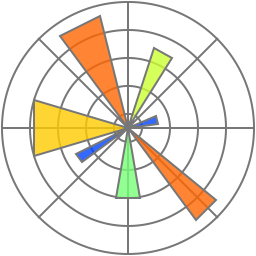
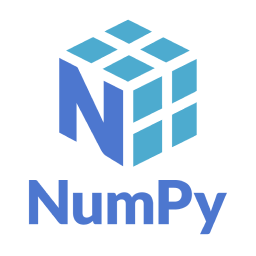
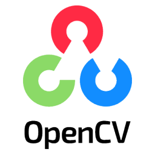

Python 파이썬
파이썬은 1991년에 발표된 인터프리터 방식의 프로그래밍 언어입니다. 파이썬의 강력한 라이브러리와 풍부한 생태계를 통해, 데이터를 수집하 고 분석하며 시각화하기 용이하다는 특징이 있습니다. 데이터 분석 분야에서 파이썬의 사용이 널리 퍼진 이유 중 하나는, 다른 프로그래밍 언어에 비해 직관적이기 때문에 비교적 쉽고 간편하게 사용할 수 있기 때문입니다. 파이썬은 웹 프레임워크와 같은 라이브러리와 함께 사용될 경우, 데이터를 수집하고 처리한 후 결과를 웹 애플리케이션으로 표시하 는 것도 가능합니다.
Python 라이브러리란?
라이브러리는 개발자가 코드를 처음부터 작성할 필요가 없도록 Python 프로그램에 포함시킬 수 있는 자주 사용되는 코드 모음입니다.기본적으로 Python에는 재사용 가능한 많은 함수를 포함하는 표준 라이브러리가 제공됩니다.또한 137,000개 이상의 Python 라이브러리를 웹 개발, 데이터 과학, 머신 러닝(ML) 등의 다양한 애플리케이션에 사용할 수 있습니다.
가장 인기 있는 Python 라이브러리

Matplotlib
개발자는 Matplotlib를 사용하여 데이터를 고품질 2차원 및 3차원(2D 및 3D) 그래픽으로 표시할 수 있습니다. 과학 애플리케이션에서 자주 사용됩니다.

NumPy
NumPy는 개발자가 배열의 생성 및 관리, 논리적 도형의 조작, 선형 대수 연산의 수행에 널리 사용하는 라이브러리입니다.
Requests
Requests 라이브러리는 웹 개발에 필요한 유용한 함수를 제공합니다.

OpenCV-Python
OpenCV-Python은 개발자가 컴퓨터 비전 애플리케이션용 이미지를 처리하는 데 사용하는 라이브러리입니다.
Pandas
Pandas는 시계열 데이터 및 정형 데이터(예: 테이블 및 배열)를 조작하는 데 사용할 수 있는 최적화되고 유연한 데이터 구조를 제공합니다.
Python 프레임워크란?
Python 프레임워크는 패키지와 모듈의 모음입니다. 모듈은 관련 코드의 집합이고, 패키지는 모듈의 집합입니다.
개발자는 웹 애플리케이션의 통신 방식이나 Python에서의 프로그램 속도 향상과 같은 낮은 수준의 세부 사항에
대해 걱정할 필요가 없기 때문에 Python 프레임워크를 사용하여 Python 애플리케이션을 더 빠르게 구축할 수 있습니다.
Python에는 두 가지 유형의 프레임워크가 있습니다.
• 풀스택 프레임워크에는 대규모 애플리케이션을 구축하는 데 필요한 거의 모든 것이 포함됩니다.
• 마이크로 프레임워크는 간단한 Python 애플리케이션을 구축하기 위한 최소한의 기능을 제공
하는 기본 프레임워크입니다. 또한 애플리케이션에 보다 정교한 함수가 필요한 경우 확장 기
능을 제공합니다.
가장 인기 있는 Python 프레임워크

Django
Django는 쉽고 빠르게 웹사이트를 개발할 수 있도록 돕는 구성요소로 이루어진 웹 프레임워크입니다.
Flask
Flask는 프레임워크를 간결하게 유지하고 확장할 수 있는 마이크로 웹 프레임워크입니다.
FastAPI
FastAPI는 API를 만들기 위한 파이썬 웹 프레임워크입니다. FastAPI는 이름에 걸맞게 빠른 속도를 자랑합니다.
Apache MXNet
Apache MXNet은 개발자가 연구 프로토타입 및 딥 러닝 애 플리케이션을 구축하는데 사용하는 딥 러닝 프레임워크입니다.
TurboGears
TurboGears는 웹 애플리케이션을 더 빠르고 쉽게 구축하도록 설계된 프레임워크입니다.